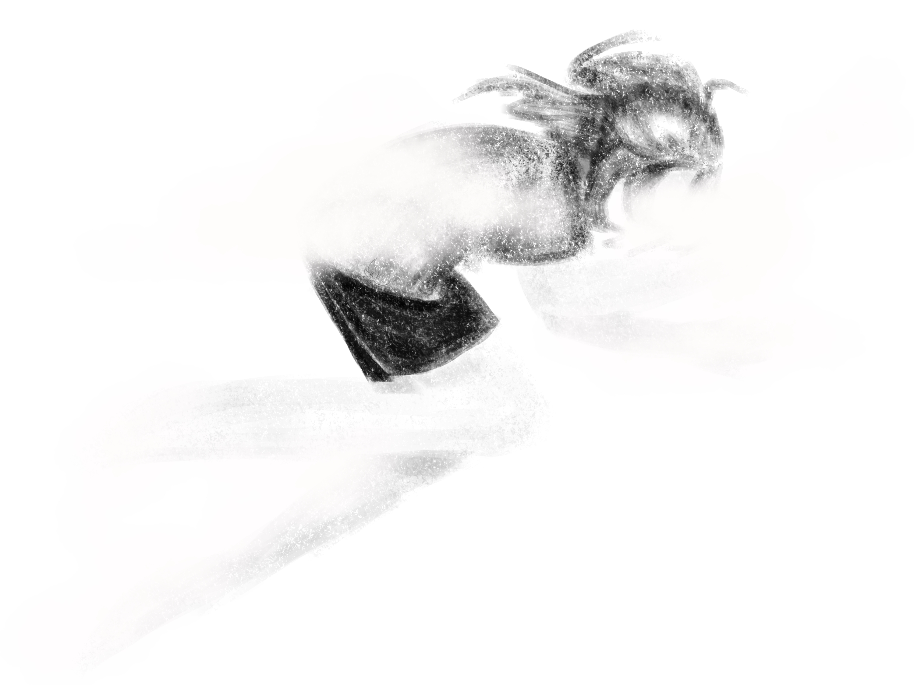

You wake up slowly, disoriented and blindly clawing at the air. After a few minutes, you collect yourself enough to sit upright. The nap didn't fix everything; the fog still lurks on your edges. But it's better than it was. The stress still sits heavy in your mind, but the hold the project had on your focus is gone. You don't want to keep working right now.
You should try to shake off the last of the fog clinging to you before you keep working. Doing something more active should help.